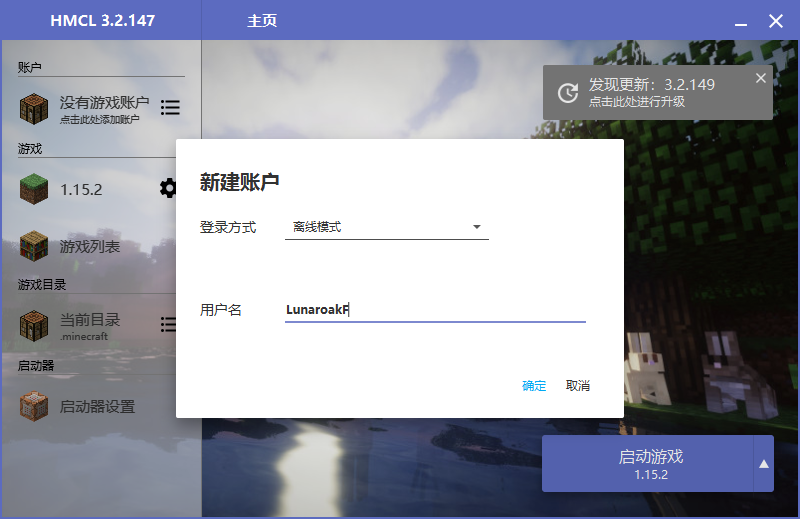
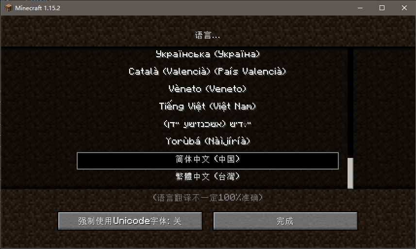

我的世界国际版交流
-分支界面-
Java游戏安装
Minecraft Launcher
官方启动器
请确定您已经在Minecraft官网购买正版我的世界国际版
本版可能有大量地方需要用到科学上网(VPN)
若无法科学上网那请移步到HMCL栏(也可正版登录)
安装并打开从官网购买后下载的MinecraftInstaller.msi文件
登录你在官网注册的正版账号
在开始游戏旁边的选择版本选择最新版本即可开始玩最新版本
中途若下载时间过长请科学上网
可在上方配置>新建...里面安装其他游戏版本
Hello Minecraft! Launcher
HMCL启动器
请确定您已经通过上一个教程安装了 Java环境,否则你将无法启动HMCL启动器以及游戏
群文件即下即玩版
请在群文件找到
“[电脑版MC]Java版的一些主流版本”
文件夹
在该文件夹里选择下载你要玩的游戏版本并打开文件夹
(下载后从文件夹打开图标即可出现)
在新弹出的窗口中可以找到你下载的游戏版本
双击打开它，若无法打开请确定电脑上是否已经安装解压缩软件
提供软件3个下载地址:
7-zip官网 狐狸提供的7-zip下载 2345好压官网
将压缩包内唯一的文件夹拖拽到你想将游戏安装在哪的地方
此时你的计算机上会多出一个你刚刚拖的文件夹
打开这个文件夹，你会看到一个工作台图标的程序，运行他即可打开启动器

若你没有正版账号则选择离线模式然后输入一个你想用的游戏名

若你有正版账号则选择正版登录然后登录你的正版账号
用户创建成功后点击启动游戏即可开玩
通过HMCL下载
请在群文件找到
“[电脑版]HMCL启动器（官方最新稳定版，本群随时跟进更新）”
文件夹

将里面唯一的程序下载并打开文件夹

你可以选择直接打开这个工作台一样的文件或者将他放到你想安装游戏的文件夹然后打开
新建游戏版本
选择你要下载的游戏版本
安装
请耐心等待 大约需要1~5分钟来安装游戏
可通过游戏版本上方的小飞机或者主界面的按钮启动游戏
设置游戏语言
游戏主界面左下角有一个语言图标
滑下去选择需要调的语言
